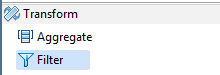
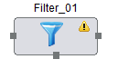

<!-- Copyright 2016 Capital One Services, LLC and Bitwise, Inc.
 Licensed under the Apache License, Version 2.0 (the "License");
 you may not use this file except in compliance with the License.
 You may obtain a copy of the License at
 http://www.apache.org/licenses/LICENSE-2.0
 Unless required by applicable law or agreed to in writing, software
 distributed under the License is distributed on an "AS IS" BASIS,
 WITHOUT WARRANTIES OR CONDITIONS OF ANY KIND, either express or implied.
 See the License for the specific language governing permissions and
 limitations under the License. -->
 
 
<!doctype html>
<html>
<head>
	<title></title>
</head>
<body></body>
</html>
<title></title>
<p><strong><span style="color:#FF0000;"></span></a></strong><span style="color:#FF0000;">Hydrograph Help</span></p>

<p><font face="verdana, geneva, sans-serif"><span style="font-size: 28px;">Filter</span></font></p>

<p><span style="font-size:14px;"><span style="font-family:verdana,geneva,sans-serif;">Hydrograph Release Version 1.0</span></span></p>

<p><span style="font-family:verdana,geneva,sans-serif;"><span style="font-size: 14px;"><b>Filter</b>&nbsp;component as the name suggests selects specific records from the input based on a filter condition. Filter is present under the Transform category in the component palette. It contains only one input,one output port and one unused port. All the records that satisfy the filter condition are available at the output port. Those records that do not satisfy the condition are transmitted through the unused port. </span></span></p>

<p><font face="verdana, geneva, sans-serif"><span style="font-size: 14px;">User is provided with options to create Java class that specify the filter condition which is then applied on the input records. Optionally, user can also use the pre-defined standard </span></font><font face="verdana, geneva, sans-serif"><span style="font-size:14px;"><span style="font-family:verdana,geneva,sans-serif;"><a href="http://Operation Class">Operation Class</a></span></span>&nbsp;<span style="font-size:14px;"><span style="font-family:verdana,geneva,sans-serif;">provided in the Operation Class section of the Help content.</span></span></font></p>

<p><span style="font-family:verdana,geneva,sans-serif;"><span style="font-size: 14px;">The Filter component can be easily distinguished in the component palette.</span></span></p>

<p></p>

<p><span style="font-family:verdana,geneva,sans-serif;"><span style="font-size: 14px;">An enlarged version of the same is depicted when dragged on the canvas.</span></span></p>

<p><span style="font-size:14px;"><span style="font-family:verdana,geneva,sans-serif;"></span></span></p>

<p><span style="font-size:14px;"><span style="font-family:verdana,geneva,sans-serif;">For further reference click on the links below:</span></span></p>

<ul>
	<li><span style="font-size:14px;"><span style="font-family:verdana,geneva,sans-serif;"><a href="Filter_Properties.html">Properties</a></span></span></li>
	<li><span style="font-size:14px;"><span style="font-family:verdana,geneva,sans-serif;"><a href="http://Operation Class">Operation Class</a></span></span></li>
	<li><span style="font-size:14px;"><span style="font-family:verdana,geneva,sans-serif;"><a href="Filter_Validations.html">Validations</a></span></span></li>
</ul>
